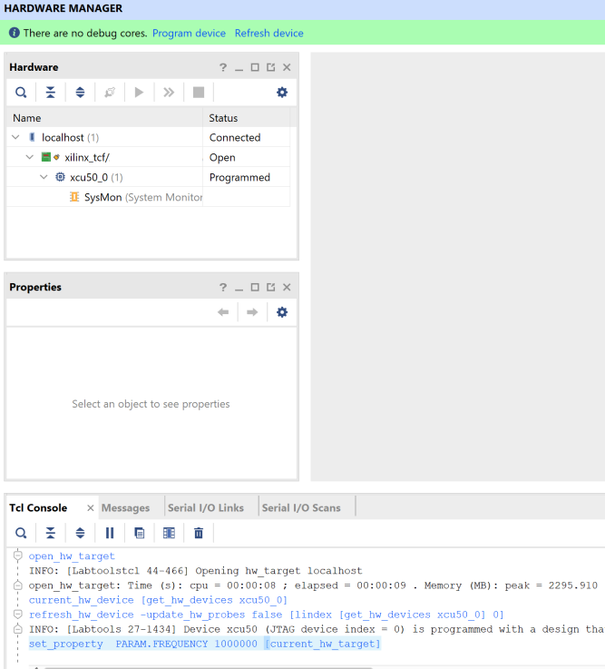
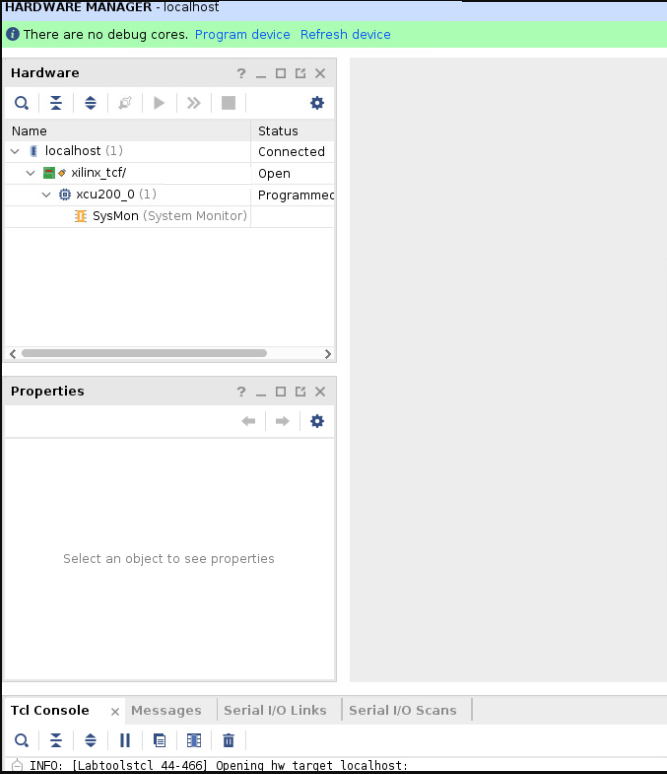

Alveo Debug Guide |
Common Steps¶
This page covers various support and debugging techniques used across other pages in the debug guide. If you are just starting to debug please consult the main page to determine the best starting point for your needs.
The techniques have been grouped into the following three sections:
| Section | Items Covered |
|---|---|
| System Steps | Host hardware, BIOS, and OS setup |
| XRT Steps | XRT installation and operation |
| Card Steps | Card programming and operation |
System Steps¶
This section covers steps involving the host hardware, BIOS, and OS setup.
Log machine state¶
To quickly collect system and card information during debugging download and run the following script: WTSxrtLog.sh. The script captures:
Initial dmesg state
OS
lscpi state
System information with dmidecode and BIOS settings
XRT state
Determine which cards validate
dmesg state after XRT commands
Root sudo access¶
For certain actions, root/sudo privileges are required. Determine root/sudo privileges using the whoami and or sudo whoami commands:
whoami will tell you who the user is
:~> whoami
root
If the response is root, you have the needed permissions. Otherwise try
:~> sudo whoami
root
root indicates your account has sudo access. If you do not have the needed permissions speak with your sys-admin
Host machine and hypervisor information¶
To display host machine information and determine if a VM environment is being used, run the following linux dmidecode command
sudo dmidecode | less
It will display:
Serial Number
Model
BIOS version
XRT has support for the KVM hypervisor and virtual machines. The dmidecode output has enough information to confirm if XRT is running on a physical machine versus a virtual machine using the manufacturer and product name lines in the beginning of the report. You can also use this information to determine if the machine is a workstation or a server, with a web search.
A physical machine will report the manufacturer and model of the hardware. Common manufacturers include Dell, HP, SuperMicro and IBM. An example of this output, for a Dell server, is displayed below.
Handle 0x0100, DMI type 1, 27 bytes
System Information
Manufacturer: Dell Inc.
Product Name: PowerEdge R730
Version: Not Specified
Serial Number: xxxxxx
An example of the BIOS version found is displayed below. The BIOS displayed is version 2.8.0 in this case.
Handle 0x0000, DMI type 0, 24 bytes
BIOS Information
Vendor: Dell Inc.
Version: 2.8.0
A virtual machine does not list a specific product model. The manufacturer also changes to the VM provider (normally a software company) as displayed below:
Handle 0x0100, DMI type 1, 27 bytes
System Information
Manufacturer: QEMU
Product Name: Standard PC (Q35 + ICH9, 2009)
Common VM manufacturers include QEMU, Xen, VMware, VirtualBox/Oracle, OpenStack, KVM. Only KVM is supported - see https://developer.xilinx.com/en/articles/using-alveo-data-center-accelerator-cards-in-a-kvm-environment.html for setup details.
Determine Linux release¶
Use the cat /etc/*release command to determine the Linux release
:~> cat /etc/*release
NAME="Red Hat Enterprise Linux"
VERSION="9.1 (Plow)"
ID="rhel"
ID_LIKE="fedora"
VERSION_ID="9.1"
PLATFORM_ID="platform:el9"
PRETTY_NAME="Red Hat Enterprise Linux 9.1 (Plow)"
ANSI_COLOR="0;31"
LOGO="fedora-logo-icon"
CPE_NAME="cpe:/o:redhat:enterprise_linux:9::baseos"
HOME_URL="https://www.redhat.com/"
DOCUMENTATION_URL="https://access.redhat.com/documentation/red_hat_enterprise_linux/9/"
BUG_REPORT_URL="https://bugzilla.redhat.com/"
REDHAT_BUGZILLA_PRODUCT="Red Hat Enterprise Linux 9"
REDHAT_BUGZILLA_PRODUCT_VERSION=9.1
REDHAT_SUPPORT_PRODUCT="Red Hat Enterprise Linux"
REDHAT_SUPPORT_PRODUCT_VERSION="9.1"
Red Hat Enterprise Linux release 9.1 (Plow)
Red Hat Enterprise Linux release 9.1 (Plow)
In this example, the first line tells us the system is running RHEL 9.1
Ubuntu or CentOS outputs look similar.
Determine Linux kernel and header information¶
For XRT usage, the machine needs to have compilation header files that match the machine’s linux kernel. Run uname -r to get the kernel version as below:
:~> uname -r
4.18.0-193.el8.x86_64
In this example the system is running kernel version 4. For Ubuntu, only the GA kernels released with the LTS are supported and not the HWE kernels (refer to the latest XRT Release Notes for supported OS/kernel versions in UG1451
The kernel headers package names change between distributions. Directions for Ubuntu and RHEL/CentOS follow
Ubuntu¶
Run sudo apt list | grep linux-headers- plus the results for the kernel, from uname -r, to check which version of the headers package is installed as shown below:
:~> sudo apt list | grep linux-headers-4.15.0-112-generic
linux-headers-4.15.0-112-generic/bionic-security,now 4.15.0-112.113 amd64 [installed,automatic]
RHEL/CentOS¶
Run yum list | grep kernel- to check what versions of the kernel-devel and kernel-headers packages are install as displayed below:
:~> yum list | grep kernel-
Repository 'UIM_install' is missing name in configuration, using id.
kernel-core.x86_64 4.18.0-193.el8 @anaconda
kernel-devel.x86_64 4.18.0-193.el8 @anaconda
kernel-headers.x86_64 4.18.0-193.el8 @anaconda
Determine PCIe slot type and speed¶
Run dmidecode to display slot capabilities and determine how many slots in the motherboard support the intended shell’s PCIe configuration (i.e Gen3x16).
:~> sudo dmidecode | grep -A 10 PCI | grep -A 10 -B 1 Type | less
....
Handle 0x00C2, DMI type 9, 19 bytes
System Slot Information
Designation: PCI-E Slot 1
Type: x16
Current Usage: Available
Length: Long
Characteristics:
3.3 V is provided
PME signal is supported
Bus Address: 0000:04:00.0
The Type: field shows this is a x16 slot. Any other value display will indicate it is not a x16 slot.
Some machines will report a slot is Available or In Use in the Current Usage: field. In the example above the slot is Available.
The actual speed depends on the card/slot negotiation. The lspci command displays the actual slot speed. The example below shows a card running at x4 speeds in a x16 slot.
:~> sudo lspci -vvvd 10ee: | grep LnkCap
LnkCap: Port #0, Speed 8GT/s, Width x4, ASPM not supported, Exit Latency L0s unlimited, L1 unlimited
If the card is running slower than the slot, review the shell capabilities with xbmgmt examine -d <bdf> as shown below:
:~> sudo xbmgmt examine -d 04:00.0
-----------------------------------------------------
1/1 [0000:04:00.0] : xilinx_u50lv_gen3x4_xdma_base_2
-----------------------------------------------------
Flash properties
Type : spi
Serial Number : 123456789
Device properties
Type : u50lv
Name : ALVEO U50 LV PQ
Config Mode : 7
Max Power : 75W
Flashable partitions running on FPGA
Platform : xilinx_u50lv_gen3x4_xdma_base_2
SC Version : 5.0.27
Platform UUID : CA1BD561-0169-A52C-E463-B3300DF98172
Interface UUID : 05A5E9D4-E079-740E-76C7-499FEEC81DB3
This is a Gen3 x4 shell. The x4 link is expected.
NOTE: Make sure to match the BDF (04:00.0 in this case) with the output from dmidecode to ensure you are looking at the right card.
Another option is to look directly at the the silk screening on a motherboard or in the case of a server it may be on the risers. Here is an example picture:

The green circles show a slot that supports Gen3 x16 cards. The red circles show a Gen3 x8 that do not support Gen3 x16 speeds.
Disable fastboot¶
Use this if the system recognizes the card only after a warm boot
Boot the system into the BIOS setup menu
F12 on many machines
Disable the settings that allows the BIOS to skip initialization steps for a faster boot
Review system documentation to determine the right setting if there are questions
On cold boot the on-card FGPA (with the PCIe link) is being programmed while the machine and bios are booting up. Sometimes the BIOS will finish enumerating the PCIe device before the FPGA programming is finished. A warm boot will cause the BIOS to re-enumerate the devices while the FPGA PCIe link is up.
Check for unpopulated CPUs¶
On modern systems the PCIe controller is built into the CPU. If there are one or more missing CPUs you may not be able to use all the PCIe slots. Review system documentation to determine which slots are usable.
To check for missing CPUs, look for a Central Processor entry with Status: Unpopulated in the dmidecode log as shown below. The line Status: Unpopulated means this system has at least one missing CPU.
Handle 0x0401, DMI type 4, 42 bytes
Processor Information
Socket Designation: CPU2
Type: Central Processor
Family: Unknown
Manufacturer: Not Specified
ID: 00 00 00 00 00 00 00 00
Version: Not Specified
Voltage: Unknown
External Clock: Unknown
Max Speed: 4000 MHz
Current Speed: Unknown
Status: Unpopulated
Determine UEFI and Secure Boot¶
As of XRT 2020.1 the drivers do not have the signing to enable Secure Boot and will not work if the BIOS has the UEFI Secure Boot feature enabled.
If you have the mokutil package installed you can determine if Secure Boot is enabled with the following command:
:~> mokutil --sb-state
SecureBoot enabled
Any other output indicates Secure Boot is not enabled.
Not all machines have mokutil installed - its an optional package. You may have to install the package or check the Secure Boot setting in the system BIOS.
XRT Steps¶
This section covers steps involving XRT installation and operation.
Confirm XRT/platform compatibility¶
Not all versions of XRT work with all platforms. To determine which XRT versions work with a platform refer to UG1120.
Determine XRT version¶
The Branch: field shows the XRT github branch. It is normally tied to a release like 2022.1 or 2022.2.
If the value is Master, you are using an un-official release.
Version: indicates the build as seen via the xbutil examine example below:
:~> xbutil examine
System Configuration
OS Name : Linux
Release : 5.14.0-162.6.1.el9_1.x86_64
Version : #1 SMP PREEMPT_DYNAMIC Fri Sep 30 07:36:03 EDT 2022
Machine : x86_64
CPU Cores : 16
Memory : 63788 MB
Distribution : Red Hat Enterprise Linux 9.1 (Plow)
GLIBC : 2.34
Model : PowerEdge R730
XRT
Version : 2.15.225
Branch : 2023.1
Hash : adf27adb3cfadc6e4c41d6db814159f1329b24f3
Hash Date : 2023-05-03 17:13:10
XOCL : 2.15.225, adf27adb3cfadc6e4c41d6db814159f1329b24f3
XCLMGMT : 2.15.225, adf27adb3cfadc6e4c41d6db814159f1329b24f3
Devices present
BDF : Shell Platform UUID Device ID Device Ready*
-------------------------------------------------------------------------------------------------------------------------
[0000:82:00.1] : xilinx_u280_gen3x16_xdma_base_1 283BAB8F-654D-8674-968F-4DA57F7FA5D7 user(inst=128) Yes
* Devices that are not ready will have reduced functionality when using XRT tools
The XOCL and XCLMGMT versions must match. If not, XRT will not operate correctly.
Determine XRT packages using the package manager¶
You will want to determine which versions (if any) of the below packages are installed
XRT
Deployment platform(s)
xbtest (an optional Alveo™ related package - see AR 75656 for more details)
Development platform(s)
Ubuntu¶
Determine the platform and xbtest packages with sudo apt list | grep -i xilinx-. The machine in the example below has the U50 and U55C deployment platforms installed; xbtest is not installed.
:~> sudo apt list | grep -i xilinx
WARNING: apt does not have a stable CLI interface. Use with caution in scripts.
xilinx-cmc-u50/now 1.0.40-3398385 all [installed,local]
xilinx-cmc-u55/now 1.5.25-3395704 all [installed,local]
xilinx-sc-fw-u50/now 5.2.20-1.6d4a0da all [installed,local]
xilinx-sc-fw-u55/now 7.1.22-1.b8c3d15 all [installed,local]
xilinx-u50-gen3x16-xdma-base/now 5-3499627 all [installed,local]
xilinx-u50-gen3x16-xdma-validate/now 5-3499627 all [installed,local]
xilinx-u55c-gen3x16-xdma-base/now 3-3494559 all [installed,local]
xilinx-u55c-gen3x16-xdma-validate/now 3-3506150 all [installed,local]
Determine the XRT package with sudo apt list | grep -i xrt. The example below has xrt 2.11.634 installed.
:~> sudo apt list | grep -i xrt
WARNING: apt does not have a stable CLI interface. Use with caution in scripts.
xrt/now 2.15.225 amd64 [installed,local]
Use the XRT release table to see if the XRT version is an official release.
RHEL/CentOS¶
Determine the platform and xbtest packages with yum list | grep -i xilinx- The machine in the example below has the Gen3x16 U50 deployment platform installed as well as the associated xbtest; no development platforms are installed.
:~> yum list | grep -i xilinx-
Repository 'UIM_install' is missing name in configuration, using id.
xbtest-xilinx-u50-gen3x16-xdma-blp-1.noarch 5.0-3055365 @@commandline
xilinx-cmc-u50.noarch 1.0.27-3041182 @@commandline
xilinx-sc-fw-u50.noarch 5.1.7-1.f121ae9 @@commandline
xilinx-u50-gen3x16-xdma-blp.noarch 1-2784799 @@commandline
There are 2 additional xbtest packages that can be seen with yum list | grep -i xbtest-:
:~> yum list | grep -i xbtest
Repository 'UIM_install' is missing name in configuration, using id.
xbtest-common.x86_64 1.1-1 @@commandline
xbtest-sw-5.x86_64 0-1 @@commandline
xbtest-xilinx-u50-gen3x16-xdma-blp-1.noarch 5.0-3055365 @@commandline
Determine the XRT package with yum list | grep -i xrt. The example below has xrt 2.8.743 installed.
:~> yum list | grep -i xrt
Repository 'UIM_install' is missing name in configuration, using id.
xrt.x86_64 2.8.743-1 @@commandline
Use the XRT release table to see if the XRT version is an official release.
Unload/reload XRT drivers¶
Use modprobe -r to remove the drivers as shown below
sudo modprobe -r xocl
sudo modprobe -r xclmgmt
Use modprobe to reload the drivers as shown below
sudo modprobe xclmgmt
sudo modprobe xocl
Order matters for both of these commands. xocl depends on xclmgmt.
Remove XRT¶
Removing XRT will also remove the deployment and development platforms. If you plan to re-install XRT, get a snapshot of XRT, platform, and xbtest packages installed on the system.
Before removing XRT, run sudo xbmgmt examine -r platform and if any cards have a shell on them, return each card to golden. This is necessary because not all XRT versions work with all platforms. All XRT versions work with a card that has been factory reset. Performing this step makes future card installs easier.
Once each card is returned to golden, use the package manager to remove the current XRT package using the following command. Note, the package manager will also remove the dependent packages.
Ubuntu:
sudo apt remove xrtRHEL/CentOS:
sudo yum remove xrt
If needed use the package manager to find the installed package names.
xclbin fails to load¶
The first time an accelerator is run on a card, XRT loads the binary description of the accelerator, stored in an .xclbin file.
If the .xclbin fails to load, run xbmgmt examine --device <management BDF> . If the output displays errors, see SC Troubleshooting.
Else there may be an platform mismatch.
XRT release versions and download locations¶
Available XRT releases along with download links are given in the table below.
| Release | Download Link |
|---|---|
| 2021.1_pu1 XRT 2.11.634 |
|
| 2021.2 XRT 2.12.427 |
|
| 2022.1 XRT 2.13.466 |
|
| 2022.2 XRT 2.14.354 |
|
| 2023.1 XRT 2.15.225 |
If you are looking for an older XRT that uses the legacy commands go to the previous XRT release versions and download locations.
Card Steps¶
Provides various techniques for debugging Alveo cards.
Displaying Card BDF Values¶
Each Alveo card is assigned both a management and an user BDF (Bus:Device:Function). For a given card, the management and user BDF values differ only by the Function digit.
To obtain the management and user BDF values for installed cards, use the following commands. It requires XRT to be installed.
The XRT documentation provides detailed descriptions on the management and user functions.
Management BDF¶
To display the management BDF values of installed cards, use the following command:
sudo /opt/xilinx/xrt/bin/xbmgmt examine
The management BDF values of installed cards are given in the square brackets under ‘Devices present’ and has the form vvvv:xx:yy.0. In the below example, only one device is present and has a management BDF of 0000:af:00.0.
Devices present
[0000:af:00.0] : xilinx_u50_gen3x16_xdma_201920_3
User BDF¶
To display the user BDF values of installed cards, use the following command:
sudo /opt/xilinx/xrt/bin/xbutil examine
The user BDF values of installed cards are given in the square brackets under ‘Devices present’ and has the form vvvv:xx:yy.1. In the below example, only one device is present and has a user BDF of 0000:af:00.1.
Devices present
[0000:af:00.1] : xilinx_u50_gen3x16_xdma_201920_3
NOTE: The user BDF only exists once a shell has been flashed onto the card. Cards with the factory golden image will only have a management BDF.
BDF displayed using lspci¶
Alveo card BDF values can also be displayed using the lspci Linux command:
sudo lspci -vd 10ee:
See Card Not Recognized for lspci field details. Alveo card PCIe IDs are discussed in the next section.
In a multi card system you may need to cross reference lspci output and xbmgmt examine --verbose output to determine if there is a card missing.
Card PCIe IDs¶
Alveo card PCIe ID information is given here. It provides the PCIe ID for both the golden image and for the shell installed.
Display card and host platform and SC versions¶
If the platform or SC running on the card does not match what is installed on the host system, applications will be unable to run correctly. To display the partition and SC version installed on the system and running on the card, use the following command:
sudo xbmgmt examine --device <management BDF>
See Displaying Card BDF Values for obtaining the management BDF value.
An output similar to this will be displayed.
-------------------------------------------------
[0000:3b:00.0] : xilinx_u55c_gen3x16_xdma_base_3
-------------------------------------------------
Flash properties
Type : spi
Serial Number : XFL1P0345SA0
Device properties
Type : u55c
Name : ALVEO U55C
Config Mode : 0x7
Max Power : 225W
Flashable partitions running on FPGA
Platform : xilinx_u55c_gen3x16_xdma_base_3
SC Version : 7.1.22
Platform UUID : 97088961-FEAE-DA91-52A2-1D9DFD63CCEF
Interface UUID : B7AC1ABE-1E3E-1CB6-86D5-A81232452676
Flashable partitions installed in system
Platform : xilinx_u55c_gen3x16_xdma_base_3
SC Version : 7.1.22
Platform UUID : 97088961-FEAE-DA91-52A2-1D9DFD63CCEF
Mac Address : 00:0A:35:08:8C:AD
: 00:0A:35:08:8C:AE
: 00:0A:35:08:8C:AF
: 00:0A:35:08:8C:B0
: 00:0A:35:08:8C:B1
: 00:0A:35:08:8C:B2
: 00:0A:35:08:8C:B3
: 00:0A:35:08:8C:B4
When a card has successfully been installed and the firmware has been updated, both entries for Platform and SC version under Flashable partitions running on FPGA and Flashable partitions installed in system must match. If they do not match, the system will be unable to correctly run applications on your card.
To confirm they match, visually compare the ‘Platform’ and ‘SC Version’ entries under Flashable partitions running on FPGA and Flashable partitions installed in system.
In the above example, the Platform (xilinx_u55c_gen3x16_xdma_base_3) and SC version (7.1.22) displayed under Flashable partitions running on FPGA and Flashable partitions installed in system both match. If they don’t match, follow the steps in the card’s installation guide to install the deployment software.
If the platform under Flashable partitions running on FPGA has the word golden or recovery in the name, the card is running the factory image and needs to be flashed before use. To flash the card, follow the steps in the card’s installation guide. See Reverting the card to factory image for details on the factory image.
Finally, if there is a platform displayed under Flashable partition running on FPGA but none under Flashable partitions installed in system, as shown in the example below, the deployment platform will first need to be installed on the system in order to run applications on the card. Follow the steps in the card’s installation guide to install the deployment software.
-------------------------------------------------
[0000:3b:00.0] : xilinx_u55c_gen3x16_xdma_base_3
-------------------------------------------------
Flash properties
Type : spi
Serial Number : XFL1P0345SA0
Device properties
Type : u55c
Name : ALVEO U55C
Config Mode : 0x7
Max Power : 225W
Flashable partitions running on FPGA
Platform : xilinx_u55c_gen3x16_xdma_base_3
SC Version : 7.1.22
Platform UUID : 97088961-FEAE-DA91-52A2-1D9DFD63CCEF
Interface UUID : B7AC1ABE-1E3E-1CB6-86D5-A81232452676
Flashable partitions installed in system
<none found>
Mac Address : 00:0A:35:08:8C:AD
: 00:0A:35:08:8C:AE
: 00:0A:35:08:8C:AF
: 00:0A:35:08:8C:B0
: 00:0A:35:08:8C:B1
: 00:0A:35:08:8C:B2
: 00:0A:35:08:8C:B3
: 00:0A:35:08:8C:B4
WARNING : No shell is installed on the system.
Flash the card with a deployment platform¶
Once the card has been installed in the system, a deployment platform must be flashed onto the card before the card can run an application. To flash the card with a deployment platform, use the following command:
sudo xbmgmt program --base --device <management BDF>
See Displaying Card BDF Values for obtaining the management BDF value.
It is recommended to follow the installation steps in the card’s installation guide. See Card Installation Guides for links to the installation guide, or navigate to your card’s landing page under the Alveo Boards and Kits web page.
Programming DFX-2RP shell partitions¶
The DFX-2RP platforms have a base partition, a shell partition, and user space as described in the XRT platforms documentation under Two Stage Platforms. For DFX-2RP platforms it is necessary to not only flash the base partition, but also to program the shell partition prior to running an application.
See AR 75975 for more information.
Determine active or passive card¶
The xbmgmt examine -r mechanical command can be used to determine if a card is active or passive based on the fan presence.
An active card shows as below
sudo xbmgmt examine -d a6:00.0 -r mechanical
-------------------------------------------------
[0000:a6:00.0] : xilinx_u280_gen3x16_xdma_base_1
-------------------------------------------------
Mechanical
Fans
FPGA Fan 1
Critical Trigger Temp : 49 C
Speed : 1410 RPM
A passive card shows as below
sudo xbmgmt examine -d 3b:00.0 -r mechanical
-------------------------------------------------
[0000:3b:00.0] : xilinx_u55c_gen3x16_xdma_base_3
-------------------------------------------------
Mechanical
Fans
Not present
Fanswith a fan listed indicates the card has a fan. The card is actively cooled, suitable for workstations.Fans: Not presentmeans the card is passively cooled and depends on server fans for cooling.
Monitor card power and temperature¶
During operation it is necessary to ensure the card operates within the power and thermal limits. These limits are dependent on the card version as detailed below:
The U50 is rated for 75W, supplied by the motherboard via
A 10W 3.3V rail
Dedicated for HBM power, see AR 75222 for more information
And a 65W 12V rail
The U200/U250/U280 are rated for 225W
75W from the motherboard via
A 10W 3.3V rail
And a 65W 12V rail
Plus 150W power from an 8 pin PCIe AUX power source.
Power¶
Use the following command to display a card’s maximum power along with its current power consumption.xbutil examine --device <user BDF> --report electrical
Depending on the card and how the card was installed, the card may have the following maximum power limits.
75W
No PCIe Aux power
Only power from the motherboard PCIe slot
Not supported for U200/U250/U280 in Vitis™ flows
150W
6 pin PCIe Aux power connected supplying 75W
Not supported for U200/U250/U280 in Vitis flows
225W
8 pin PCIe Aux power connected supplying 150W
An example output is shown below. The maximum power level for the card is 225W and displays the current power being consumed by the card at 16.035208W. It provides a breakdown of the various power rails.
-------------------------------------------------
[0000:82:00.1] : xilinx_u280_gen3x16_xdma_base_1
-------------------------------------------------
Electrical
Max Power : 225 Watts
Power : 16.035208 Watts
Power Warning : false
Power Rails : Voltage Current
12 Volts Auxillary : 0.436 V, 0.016 A
12 Volts PCI Express : 12.254 V, 1.308 A
3.3 Volts PCI Express : 3.282 V
3.3 Volts Auxillary : 3.347 V
Internal FPGA Vcc : 0.851 V, 4.672 A
DDR Vpp Bottom : 2.500 V
DDR Vpp Top : 2.500 V
5.5 Volts System : 5.509 V
Vcc 1.2 Volts Top : 1.205 V
Vcc 1.2 Volts Bottom : 1.204 V
1.8 Volts Top : 1.806 V
0.9 Volts Vcc : 0.902 V
12 Volts SW : 12.240 V
Mgt Vtt : 1.204 V
The following are the three key power rails:
12 Volts PCI Express
12V motherboard rail
+/- 8% Voltage tolerance
Current should be =<5.5A
3.3 Volts PCI Express
3.3 Volt motherboard rail
+/- 9% Voltage tolerance
Current should be =< 3A
12 Volts Auxillary (For U55C/U200/U250/U280)
These lines will report a near 0 value if PCIe Aux power is not supplied
Current should be =<12.5A for 225W operation
For the U50, the 3.3V rail powers the HBM while the 12V rail powers the rest of the card except the SC. One can confirm the HBM power is within it’s limits by looking at the 3.3 Volts PCI Express Voltage and Current values.
:~> xbutil examine -r thermal electrical -d 0000:04:00.1
------------------------------------------------
[0000:04:00.1] : xilinx_u50_gen3x16_xdma_base_5
------------------------------------------------
Electrical
Max Power : 75 Watts
Power : 65.196971 Watts
Power Warning : false
Power Rails : Voltage Current
12 Volts PCI Express : 12.182 V, 4.678 A
3.3 Volts PCI Express : 3.317 V, 2.475 A
Internal FPGA Vcc : 0.852 V, 41.800 A
Internal FPGA Vcc IO : 0.848 V, 4.900 A
5.5 Volts System : 4.947 V
1.8 Volts Top : 1.808 V
0.9 Volts Vcc : 0.905 V
Mgt Vtt : 1.209 V
3.3 Volts Vcc : 3.359 V
1.2 Volts HBM : 1.208 V
Vpp 2.5 Volts : 2.494 V
Thermals
PCB Top Front : 45 C
PCB Top Rear : 47 C
FPGA : 70 C
Int Vcc : 69 C
FPGA HBM : 65 C
The equation to calculate power is
power = voltage \* current.
From the information provided in the example above HBM is using 8.21W (3.317V * 2.475A).
You can use this script in a second terminal to monitor temperatures and voltages on a card while a design is running. Make sure to modify the script loop for the time required (this is based on the loop count in line 17 and the seconds of delay in between calls on line 19).
To use, run ./loop_examine.sh <user BDF>
See Displaying Card BDF Values for obtaining the management BDF value.
Temperature¶
Use the following command to display the value of various temperature sensors on the card.xbutil examine --device <user BDF> --report thermal
An example of the output is shown below
-------------------------------------------------
[0000:3b:00.1] : xilinx_u55c_gen3x16_xdma_base_3
-------------------------------------------------
Thermals
Temperature : Celcius
PCB Top Front : 36 C
PCB Top Rear : 32 C
FPGA : 38 C
Int Vcc : 41 C
Use system logs to see if the card exceeded power or thermal limits¶
XRT will log if there has been a critical event in dmesg similar to below:
[93352.134536] xclmgmt 0000:a3:00.0: clock.m.25165825 ffff90a92b74a010 clock_status_check: Critical temperature or power event, kernel clocks have been stopped.
[93352.134643] xclmgmt 0000:a3:00.0: firewall.m.12582914 ffff90a92e634c10 check_firewall: AXI Firewall 3 tripped, status: 0x80004, bar offset 0x3000, resource ep_firewall_ctrl_user_00 1 0 1 axi_firewall
[93352.134648] xclmgmt 0000:a3:00.0: firewall.m.12582914 ffff90a92e634c10 check_firewall: Firewall 0, ep ep_firewall_blp_ctrl_mgmt_00 1 0 1 axi_firewall, status: 0x0, bar offset 0x1f02000
[93352.134652] xclmgmt 0000:a3:00.0: firewall.m.12582914 ffff90a92e634c10 check_firewall: Firewall 1, ep ep_firewall_blp_ctrl_user_00 1 0 1 axi_firewall, status: 0x0, bar offset 0x1f03000
[93352.134657] xclmgmt 0000:a3:00.0: firewall.m.12582914 ffff90a92e634c10 check_firewall: Firewall 2, ep ep_firewall_ctrl_mgmt_00 1 0 1 axi_firewall, status: 0x0, bar offset 0x2000
[93352.134661] xclmgmt 0000:a3:00.0: firewall.m.12582914 ffff90a92e634c10 check_firewall: Firewall 3, ep ep_firewall_ctrl_user_00 1 0 1 axi_firewall, status: 0x80004, bar offset 0x3000
[93352.134666] xclmgmt 0000:a3:00.0: firewall.m.12582914 ffff90a92e634c10 check_firewall: Firewall 4, ep ep_firewall_ctrl_debug_00 1 0 1 axi_firewall, status: 0x0, bar offset 0x4000
[93352.134670] xclmgmt 0000:a3:00.0: firewall.m.12582914 ffff90a92e634c10 check_firewall: Firewall 5, ep ep_firewall_data_h2c_00 1 0 1 axi_firewall, status: 0x0, bar offset 0x5000
[93352.134672] xclmgmt 0000:a3:00.0: health_check_cb: Card requires pci hot reset
There will be no mention if this is a temperature or power event.
There may be an indication of an over temperature event earlier in dmesg as XRT will log if a device is approaching the temperature limits as below:
[686835.888454] xclmgmt 0000:05:00.0: check_temp_within_range: Warning: A Xilinx acceleration device is reporting a temperature of 96C. There is a card shutdown limit if the device hits 97C. Please keep the device below 88C.
[686836.200333] xocl 0000:05:00.1: ffff8a0e1e23f098 _xocl_drvinst_open: OPEN 2
If the limits are exceeded in either case, the device will be shut down. Often a firewall trip can be observed as below:
[67066.484066] firewall.m firewall.m.10485760: dev ffff9b24390edc10, check_firewall: AXI Firewall 3 tripped, status: 0x4, bar offset 0x3000, resource ep_firewall_ctrl_user_00 1 0 1
[67066.484070] xclmgmt 0000:03:00.0: health_check_cb: Card is in a Bad state, notify userpf
This indicates the device was shutdown to protect it.
You can also expect to see a firewall trip message in xbutil examine as shown below:
Card Power(W)
16
~~~~~~~~~~~~~~~~~~~~~~~~~~~~~~~~~~~~~~~~~~~~~~~~~~~~~~~~~~~~~~~~~~~~~~~~~~~~~~~~
Firewall Last Error Status
Level 3 : 0x80004(RECS_CONTINUOUS_RTRANSFERS_MAX_WAIT|RECS_WRITE_TO_BVALID_MAX_WAIT)
Error occurred on: Wed 2020-08-19 13:59:13 MDT
To actively monitor the card’s power and temperature during runtime, use the script provided in the monitoring power and temperature section.
Reverting the card to factory image¶
Xilinx Alveo cards might need to be reverted to their factory (or golden) image. This is recommended when:
Preparing to flash a different shell onto the card
Preparing to upgrade or change the version of XRT installed on the host
The card no longer appears on lspci after programming a custom image onto the card
AR71757 Reverting Card to Factory image provides methods to revert the card using either the Vitis/XRT or Vivado flow.
Vivado HW Manager¶
This is for the more advanced user comfortable with manually programming FPGAs
If a card can’t be seen by multiple systems via lspci, the next step is to see if the FPGA is alive by determining if it can be seen in Vivado HW manager. The steps for connecting the U50/U55C and U200/250/280 cards are below.
For the U50 and U55C:
An Alveo Programming Cable is necessary to see the U50/U55C in Vivado Hardware Manager
The Alveo Programming Cable is shown in Figure 3 in UG1377: UG1377 V1.1
Follow the directions in UG1377 to connect the Alveo Programming Cable between a computer and the card. a. Pages 1-13 b. Often the debug machine is a windows laptop
Open Vivado hardware manager
Tools → Auto connect
set_property PARAM.FREQUENCY 1000000 [current_hw_target]The FPGA should be displayed. In the following example the xu50_0 is displayed:

If the device shows up in Vivado HW Manager follow AR 71757 to revert the card back to the golden image
Otherwise the FPGA is not working, post on the Xilinx forums
For the U200/U250/U280:
Plug in JTAG cable between U200/U250/U280 card and debug machine a. Often the debug machine is a windows laptop
Open Vivado hardware manager
Tools → Auto connect
set_property PARAM.FREQUENCY 1000000 [current_hw_target]The xcu200_0 should show as below:

If the device shows up in Vivado HW Manager follow AR 71757 to revert the card back to the golden image
Otherwise the FPGA is not working, post on the [Xilinx forums]https://support.xilinx.com/s/topic/0TO2E000000YKXlWAO/alveo-accelerator-cards)
Xilinx Support¶
For additional support resources such as Answers, Documentation, Downloads, and Alerts, see the Xilinx Support pages. For additional assistance, post your question on the Xilinx Community Forums – Alveo Accelerator Card.
Have a suggestion, or found an issue please send an email to alveo_cards_debugging@xilinx.com .
License¶
All software including scripts in this distribution are licensed under the Apache License, Version 2.0 (the “License”); you may not use this file except in compliance with the License.
You may obtain a copy of the License at http://www.apache.org/licenses/LICENSE-2.0
All images and documentation, including all debug and support documentation, are licensed under the Creative Commons (CC) Attribution 4.0 International License (the “CC-BY-4.0 License”); you may not use this file except in compliance with the CC-BY-4.0 License.
You may obtain a copy of the CC-BY-4.0 License at https://creativecommons.org/licenses/by/4.0/
Unless required by applicable law or agreed to in writing, software distributed under the License is distributed on an “AS IS” BASIS, WITHOUT WARRANTIES OR CONDITIONS OF ANY KIND, either express or implied. See the License for the specific language governing permissions and limitations under the License.
XD027 | © Copyright 2021 Xilinx, Inc.